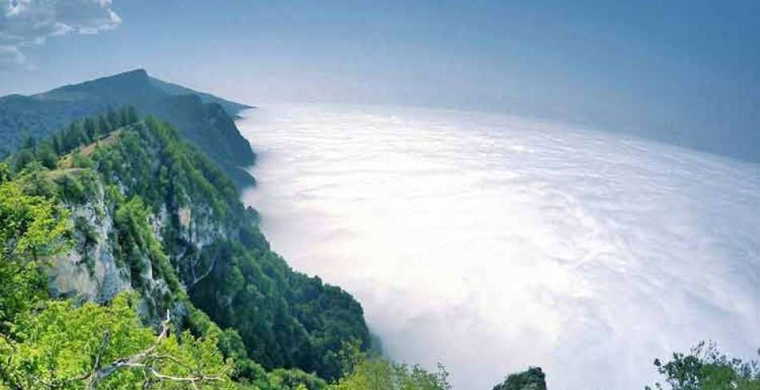

Niasar Waterfall
Niasar is one of the districts of Kashan in Isfahan Province. It owns many fantastic tourist attractions which the most beautiful and popular one is the eye catching Niasar Waterfall. This water is frequently visited by nature lovers especially during spring. Niasar Waterfall starts from a water spring near a fire temple dating back to Sassanid era. Niasar owns all its history and natural view to this ancient spring. The spring also waters the vast lush lands of Niasar. The bedrock that made the water passage of Niasar Waterfall is usually made of lime and through ages made a delightful shape. Niasar waterfall is as high as 25 meters; the enjoyable atmosphere of the surrounding area of Niasar Waterfall is a proper choice for spending some quality time in and enjoys the natural scenic view. In the line with the waterfall, there were about thirteen gristmills that 4 of them were destroyed and currently only one of them is working. If you are looking for the best travel agency in Iran to but an Iran tour package, we recommend you to experience Alaedin Travel services.
Filbanc
Filband Village (Felban) located at an altitude of about 2,300m above sea level, Filband on the eastern side of Mazandaran is known as the roof of the province, with its high mountains and dense forest. It is also a popular tourist destination in northern Iran. read more on itto.org The village always is surrounded by an ocean of clouds, extending deep into horizon, which is a very calming and tranquilizing scenery for the visitors. The climate in the area is so varying that on the same day, one can experience a wide range of climatic changes, from cloudy, foggy and rainy to breezy and snowy, particularly, during the cold seasons. The area has harsh winters, leaving the village uninhabited for almost seven months. . itto.org | Read more at itto.org: https://www.itto.org/iran/attraction/filband-village Interestingly, in summer, while the downhill weather is sultry, you can experience a mild and pleasant weather at the high-altitudes of Filband. On sunny days, due to its height, you would experience such a great scenery, viewing forests, moors and villages from the vantage point. Visiting Filband village provides visitors with the opportunity to have a view of the peaks of Alborz mountain range looking southward and Caspian Hyrcanian Mixed Forests and green valleys looking northward. copyright itto.org Tourists to the village can also rest in wooden cottages sipping hot tea while watching the clouds floating smoothly. read more on itto.org . |
Chabahar Port
CChabahar is the only oceanic port in Iran, and its weather is often vernal. One of the most interesting tourist attractions of Chabahar is local clothing and folk music of Baluch tribes. Chabahar to Gwadar Road is one of the routes where spectacular sites can be visited: Ramin Village and its wharf, Lipar wetland, or Pink Lagoon, Merikhi (Martian) Mountains or Miniature Mountains, and Beris Beach and Wharf. Some of the other historical attractions of Chabahar are: Bahu Kalat or Gandu Village, Konarak City near Chabahar City and Konarak Wharf, Local Bazaar (Lateh Bazaar) and Gelafshan spring of Bandar-e Tang, and Tis ancient village. In addition, Chabahar has got several natural attractions such as: Baan Mesiti Caves, Tis Ancient Castle (or the Castle of Portuguese), Tis Friday Mosque, Tis Botanical Garden, Tis Wharf and Beach, Chabahar Local Museum, Telegraph Office Building, Chabahar Diving Cottage, Shrine of Imamzadeh Seyyed Gholam Rasool, shrine of Khezr the Prophet, and Darya Koochak and Darya Bozorg Seaside Resorts.Chabahar is a free trade zone and one of the southeastern cities of Sistan and Baluchestan Province in Iran. It is also the only oceanic port of Iran located on the shores of the Makran Sea (Oman Sea) and the Indian Ocean. Its anchorage is capable of berthing ocean liners. Chabahar Port is the closest way to access the international waters for the landlocked countries of Central Asia (Afghanistan, Turkmenistan, Uzbekistan, Tajikistan, Kyrgyzstan, and Kazakhstan). Chabahr County reaches Iranshahr and Nikshahr counties in the Sistan and Baluchistan Province on the north, Oman Sea on the south, Pakistan on the East, and Kerman and Hormozgan provinces and the West. The height of Chabahar is 7 meters from the sea level. The average annual temperature is 24°C and the average annual precipitation is 10 mm. It has a temperate, tropical climate with relative humidity.

Khalednabi
In the stunning green hills of Northern Iran, one cemetery is covered in headstones distinctly resembling male and female genitalia. Some are cylindrical and capped, while others are paired and rounded. All told, the cemetery has a total of 600 monuments to sex organs sprawling across the vibrant landscape. Khalid Nabi Cemetery is a little-known place in 90 km northeast of the city of Gonbad-e kavous, famous for its ancient tombs and special gravestones.In a country known for its strict religious law, a cemetery dotted with varying-sized penis and breast shaped headstones tends to stand out. Visitors can immediately tell that the cemetery was created in a far different era. Close to the border with Turkmenistan, some experts suggest that the cemetery was created by phallus worshipping peoples from Central Asia and India, although conclusive proof of this does not exist. Little scholarship has occurred on the cemetery’s origins within Iran because of a strong national embarrassment over the suggestive stones. There is little publicity over the cemetery and most scholars have strayed from studying the historic area.The Khalid Nabi cemetery and tomb complex consists of several pilgrimage sites as well as a historic cemetery. Located in the highlands and mountainous areas of Golestan province, it is the burial site of Khalid Nabi (the ancient prophet) as well as numerous small and large stone statues. All of these factors, along with the spectacular landscapes of the surrounding countryside, have made this area an important tourist attraction in the north of the country.Khalid Nabi is an Arab Prophet who used to live 40 years before the Prophet Muhammad (peace be upon him). Khalid ibn Sanan, known among Turkmen as Khalid Nabi (Prophet Khalid), was born in the land of Aden in Yemen. According to the historical documents, he is one of the four prophets who lived between the time of Jesus Christ and the Prophet of Islam. During the Sassanid rule over Iran, Khalid Nabi fled to this site to avoid government agent .Since Khalid Nabi is popular and respected among the Turkmen people, alongside the mausoleum, a number of rooms and small hostels and a mosque are built for pilgrims to stay and relax. It is mainly situated on a mountain ridge about 1 km distance from the mausoleum called “Khaled Nabi” who according to oral tradition of the Yomut Turkomans was a pre-Islamic prophet and whose mausoleum is visited by them for pilgrimage together with the neighbouring one of Ata Chofun (“Father Shepherd”), his son-in-law. The cemetery was visited in 1979 and 1980 by the archeologist David Stronach. He found over 600 standing stones which are spread out in several locations. About half of them are on the ridge which he calls “High Plateau” South and south-east of that are small groups of stones on several other ridges and hillocks. At some distance there is another group of perhaps 150 stones which are distributed over a wide area on the south side of the mountain.

Mesr Desert
Mesr is desert and also an oasis located in the central desert of Iran, (known as Dashte-Kavir in Persian). The central mountain ranges of Iran which are predominantly isolated oasis type mountains which run through the desert territory of Iran, are close by. The town’s only water source and therefore lifeline comes from a spring that flows out of the foothills of the aforementioned mountains quite close to the heart of the village. This is the only source of life for the gardens and date palm orchards that make this oasis such a special place. Watching sunsets and stars are very encouraged in this region.Reaching Mesr is easy, although you need to change direction several times from major cities of Iran, around 250 kilometers drive onto the Naein-Tabas road from Esfahan west to east. After passing Farokhi and Nasrabad villages, there is a sign showing off-road direction: ” Toward Mesr.” All in all, it is 420 km from Isfahan. Upon 43 kilometers drive from the sign across the sand hills, 3 green spots will appear from far, similar to three emeralds next to each other. Few moments later, while the absolute silence of desert is your only company, you will find yourself in the first emerald land, Amirabad. The road is totally flat which is considered as one of the wonders of Iran’s central desert and surprises every Eco-tourist. The sand hills around the village are known as thrones since the strong wind has shaped the surface, forming strange and attractive figures. By BUS, it is possible to reach Khur, which is around 50 km from Mesr. There are buses to Khur from Isfahan (every day at 1 pm from Kaveh terminal, taavune 4, 205000 IRR) and from Yazd once a day. Some buses between Mashhad and Tehran also stop in Khur at night. Ask locally about the times and prices. From Khur to Mesr taxi is the only option. You can call your accommodation in advance to have a taxi driver wait for you or you can just charter one when you arrive. The price is 400000 IRR for the whole car (2016). Tens of millions of years ago, the dry Dasht-e Kavir land was occupied by a salt-rich ocean that surrounded a small piece of the continent that is now considered to be central Iran. As the ocean dried up, it left behind a salt layer as much as 6 to 7 kilometers thick. Over time, the salt was covered by mud, but its power made it push through over the years and created the salt domes in this desert, which is definitely a unique phenomenon worth exploring while you are in Iran! The wonders of this ancient ocean and current desert are quite indescribable! From the silent serenity of the desert to the villages built by resilient people in the desert land over time, there is so much to see! This Iran tour package is designed to show you the modernity of cities like Tehran, the calmness of the sandhills, and the uniqueness of Tabas villages along our way to get to one of the unique desert cities in the world, Yazd. In IranAmaze Iran travel agency We’ll experience the diversity along the path of Dasht-E Kavir while learning many lessons from the people we’ll meet on our tour. It will be a deep adventure through this ancient land called Iran!